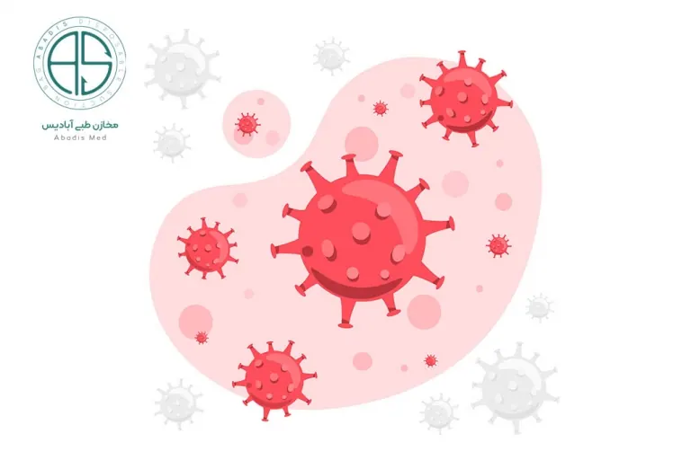

شیوع ویروس کرونا از۳۰ بهمن سال ۱۳۹۸ زندگی جامعه بشری را دستخوش تغییرات فراوانی کرده است و در حال حاضر نیز تمام ابعاد زندگی انسان ها را تحت تاثیر خود قرار داده است .
پسا کرونا یعنی دوران زندگی با کرونا ، این شرایط انسان ها را مستلزم به انجام اقداماتی کرده است که از خود در برابر ویروس کرونا محافظت کنند که این اقدامات از انجام دستورالعمل های بهداشتی گرفته تا استفاده از محصولات ضد عفونی کننده و دستگاه هایی که برای از بین بردن میکروب ها ، ویروس ها و میکروارگانیسم ها استفاده می شود.
در بیمارستان تراکم بالای جمعیت و تعداد زیادی از افراد مستعد از عوامل موثر در عفونت های بیمارستانی هستند؛ عفونت بیمارستانی یک خطر بسیار جدی بعد از عمل های جراحی است چون بیمار در حین اینکه در بیمارستان بستری است به این عفونت دچار میگردد. عفونت های بیمارستانی در طی بیماری همه گیر ویروس کرونا چالش جدی را برای کادر درمان در سطح جهان به وجود آورده است ، و همچنین منجر به پرداخت هزینه های اضافی در بیمارستان ها شده است.
در بیمارستان ها ، که انتقال عفونت از هر جای دیگری بیشتر صورت میگیرد مخصوصا در شرایط کرونایی ، بیمارستان ها مستلزم به استفاده از تجهیزات یکبار مصرف هستند که هم از شیوع ویروس کرونا جلوگیری شود و هم عفونت بیمارستانی کاهش یابد.
افراد در هرسنی به کووید ۱۹ حساس هستند به خصوص افراد مسن که بیماری زمینه ای دارند مثل دیابت فشار خون بالا و بیماری های قلبی عروقی و هم چنین افرادی که سیستم ایمنی ضعیفی دارند در معرض کووید ۱۹ قرار دارند. کووید ۱۹ می تواند از طریق تماس مستقیم با خون ، مایعات بدن، قطرات و سطوح آلوده به ویروس منتقل شود
مبارزه با ویروس کرونا می تواند درس های مهمی برای پیشگیری و کنترل عفونت های بیمارستانی در آینده به ما بدهد ؛ در این مقاله قصد داریم به برخی از راهکار های اصلی پیشگیری و کنترل عفونت های بیمارستانی در دوران کرونا و پسا کرونا بپردازیم .
بیمارستان ها مکان هایی هستند که بیماران در آن جمع می شوند ، بنابراین انجام اقدامات مناسب و موثر در بیمارستان ها برای جلوگیری و کنترل عفونت بیمارستانی ، کنترل شیوع همه گیر کووید۱۹ و محافظت از کادر پزشکی بسیار مهم است
شناخت علمی و آموزش دانش پیشگیری و کنترل کووید۱۹ مقدمه پیشگیری و کنترل عفونت بیمارستانی است به همین منظور بیمارستان ها در همه سطوح باید یک سیستم فرماندهی اورژانس ایجاد کنند تا از روند مدیریت عفونت بیمارستان اطمینان حاصل کنند این سازمان باید کنترل و نظارت بر تمام بخش های بیمارستان داشته باشد و مسئول پیشگیری و کنترل عفونت کووید ۱۹ است و باید به تمامی مسئولین بخش ها آموزش های لازم را در جهت کنترل و پیشگیری بدهد.
بیمارستان ها باید برای جداسازی و درمان بیماران مشکوک و یا تایید شده به کووید ۱۹ یک بخش جدا در نظر بگیرند و باید یک بخش برای کووید ۱۹ ایجاد شود
طبق اصل انزوا، بیماران مشکوک به عفونت باید به صورت جداگانه در اتاق های یک نفره قرار بگیرند و بیماران با علت تایید شده را می توانیم در همان اتاق قرار دهیم برای تقویت مدیریت چنین بیمارانی ،بیماران باید ماسک بزنند و نباید بخش را ترک کنند و این بخش باید با علامت های هشدار دهنده از دیگر بخش ها جدا شود بدون هیچ فرد همراهی و بیماران مبتلا به کووید 19 که علائم شدیدی دارند باید در بخش ویژه ICU قرار گیرند.
پسماند های پزشکی تولید شده توسط بیماران باید در یک کیسه زباله پزشکی زرد دو لایه قرار داده شود و برچسب زباله های عفونی روی آن زده شود و به بیرون از بخش منتقل شود.
اقدامات ضد عفونی کننده ای که توسط بیمارستان ها انجام می شود برای پیشگیری و کنترل شیوع کووید۱۹ بسیار مهم است
ناحیه ضد عفونی باید مکان هایی را که تماس مستقیم یا احتمالی با بیماران ، اقلام آلوده و محیط وجود دارد پوشش دهد
روش های ضد عفونی :
انتخاب صحیح مواد ضد عفونی کننده یکی از عوامل مهم برای اطمینان از کیفیت ضد عفونی کننده ها است،کووید ۱۹ به نور ماورا بنفش و گرما حساس است؛ دمای ۵۶ درجه سانتی گراد به مدت ۳۰ دقیقه ،اتانول ۷۵ درصد ، اتیل اتر ، ضد عفونی کننده کلر و کلروفرم می تواند به طور موثر ویروس را غیر فعال کند. در صورتی که کلر هگزیدین نمی تواند این ویروس را غیر فعال کند برای اطمینان از بهترین اثر ضدعفونی کننده باید غلظت ،دوز و زمان استفاده از ضد عفونی کننده ها به شدت رعایت شود .
ضد عفونی هوا
ضد عفونی هوا باید مطابق با مدیریت تصفیه هوای بیمارستان انجام شود ، افراد می توانند پنجره ها را باز کنند و اتاق را هر بار ۲ بار و هر بار ۳۰ دقیقه تهویه کنند و یا با ضد عفونی کننده هوا ۴ بار در روز و هر بار ۲ ساعت ضدعفونی کنند؛ یک اتاق خالی باید یک بار در روز و هر بار بیش از ۱ ساعت در معرض اشعه ماورا بنفش قرار گیرد.
قسمت هایی از بیمارستان که پرسنل بیش تر در آن رفت و آمد دارند مثل راهرو ها ، سالن ها ، آسانسور و غیره را می توان با استفاده از سمپاش به انداره ۵۰۰ میلی گرم در لیتر دی اکسید کلر پاشید .
برای ضدعفونی کامل هوا باید از اشعه ماورا بنفش برای حداقل ۱ ساعت تابش و سپس تهویه استفاده شود.
ضدعفونی سطح زمین و اشیا باید مطابق با مشخصات فنی برای ضدعفونی موسسات پزشکی انجام شود؛ سطوح اشیا و کف اتاق باید با مواد ضد عفونی کننده حاوی کلر ۱۰۰۰ میلی گرم در لیتر یا دی اکسید کلر ۵۰۰ میلی گرم در لیتر کاملا پاک و ضد عفونی شود .
نکته مهم دیگر این است که تا آنجایی که امکان دارد تجهیزات پزشکی ، لوازم و کالاهای یکبار مصرف انتخاب شوند برای مثال استفاده از کیسه ساکشن های یکبارمصرف تاثیر بسیار زیادی در کنترل عفونت بیمارستانی گذاشته است
ملافه ، روتختی و سایر پارچه های مورد استفاده بیماری که فوت کرده است باید به عنوان ضایعات پزشکی عفونی در کیسه های زباله پزشکی زرد ۲ لایه دفع شود. همچنین لحاف یا لباس آلوده به مدفوع بیمار باید دفع شود
پارچه هایی که نیاز به استفاده مجدد دارند را می توان در کیسه های زباله های پزشکی که علامت دار هستند قرار داد و سپس به یک مرکز شستشو منتقل کرد
زباله های عفونی باید در یک کیسه زباله پزشکی زرد دو لایه با علامت کووید ۱۹ روی کیسه حمل شود و سپس در زمان تحویل ۱۰۰۰ میلی گرم در لیتر ضدعفونی کننده حاوی کلر باید خارج از کیسه زباله های عفونی پاشیده شود، سپس به انبار زباله های پزشکی منتقل شود.
زباله های پزشکی تولید شده باید روزانه تمیز شوند و زمان دفع نباید بیش از ۴۸ ساعت باشد.
پس از مرگ بیمار مشکوک و یا مبتلا به عفونت لازم است کلیه کانال های باز بیمار مثل دهان ، بینی ، گوش ها و مقعد باید از ضدعفونی کننده حاوی کلر و یا از پنبه اسید پر استیک استفاده شود ، برای انتقال جسد هم باید از پارچه دو لایه استفاده شود و سپس از کیسه های پلاستیکی دو لایه ضد نشت برای کاور کردن جسد استفاده شود
وسایل شخصی مورد استفاده بیماران پس از ترخیص، انتقال و یا مرگ باید به طور کامل و دقیق ضدعفونی شود. محافظت علمی و موثر از پرسنل پزشکی در غبه بر بیماری کووید ۱۹ از اهمیت بسیاری برخوردار است. هنگام ورود و یا خروج از بخش های کرونایی کارکنان پزشکی باید تجهیزات محافظتی را به درستی بپوشند و خارج کنند.
کارکنان پزشکی باید از کلاه یکبار مصرف ، ماسک جراحی ، لباس عایق نفوذ ناپذیر یکبار مصرف و دستکش لاتکس و عینک محافظ استفاده کنند، و همچنین باید از روکش یکبار مصرف کفش استفاده کنند .
بیمارستان ها در تمام سطوح نه تنها مکانی برای پیشگیری و درمان کووید۱۹ هستند بلکه مناطق پر خطر برای انتقال عفونت هستند در بیمارستان ها پیشگیری و کنترل، کلید کاهش عفونت بیمارستانی اطمینان از ایمنی پزشکان و بیماران و جلوگیری از شیوع کرونا است .